Bien utiliser SIGR en tant que CCI
Ce guide présente pas à pas la consultation de l'application SIGR pour suivre les processus, les risques, les évaluations, les plans de mitigation, les indicateurs et les plans d'audit relevant de votre périmètre de contrôle. Il ne remplace pas la politique de contrôle interne de l'institution, mais en constitue le mode d'emploi opérationnel dans l'outil.
Se connecter à la plateforme
L'accès à SIGR se fait via un navigateur web, sur la page de connexion aux couleurs du Ministère de tutelle et de la République du Bénin.
Pour se connecter :
- Saisir son Compte Utilisateur (identifiant fourni par l'administrateur de l'application).
- Saisir son Mot de passe.
- Cocher « Se souvenir de moi » si l'on souhaite rester connecté sur le poste utilisé (à éviter sur un poste partagé).
- Cliquer sur « Se connecter ».
En cas d'oubli du mot de passe, cliquer sur le lien « Mot de passe oublié ? » et suivre la procédure de réinitialisation.
Objet du guide et rôle de la CCI
Ce guide s'adresse aux membres de la Cellule de Contrôle Interne (CCI) d'une institution utilisant SIGR.
2.1 Objet du guide
Il présente pas à pas la consultation de l'application SIGR (Système d'Information de Gestion des Risques) : comment suivre les processus, les risques, les évaluations, les plans de mitigation, les indicateurs et les plans d'audit relevant de son périmètre de contrôle. Il ne remplace pas la politique de contrôle interne de l'institution, mais en constitue le mode d'emploi opérationnel dans l'outil.
2.2 Qu'est-ce que la Cellule de Contrôle Interne (CCI) ?
La CCI est la structure chargée de vérifier, au sein de l'institution, que les risques identifiés par les services sont correctement maîtrisés. Dans SIGR, la CCI dispose d'un accès en consultation à l'ensemble des modules (Formalisation du risque, Évaluations, Mitigation, Audit, Cartographie) : elle peut voir tout ce que les responsables risque des différents services ont renseigné, sans pouvoir elle-même créer, modifier ou supprimer ces éléments.
Ses missions principales sont :
- Consulter les processus/missions formalisés par les responsables risque de l'entité ;
- Consulter les risques identifiés et leur statut de traitement ;
- Consulter les évaluations de risques (probabilité, impact, score, priorité) ;
- Suivre l'avancement des plans de mitigation, des actions et des indicateurs de réalisation ;
- Consulter les plans d'audit rattachés aux processus et aux risques, afin de vérifier la fiabilité des dispositifs de maîtrise mis en place ;
- Signaler au Responsable des risques toute anomalie ou insuffisance constatée lors de sa revue.
2.3 Présentation générale de l'application
SIGR est organisé en cinq grands modules accessibles depuis le menu de gauche : Formalisation du risque, Évaluations, Mitigation, Audit et Cartographie des risques. Un tableau de bord central donne une vue synthétique de l'activité de l'entité connectée.
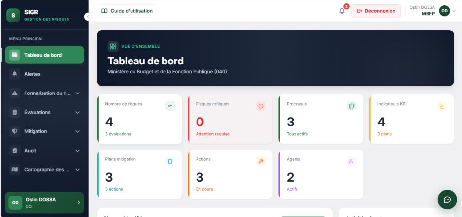
Tableau de bord
Après connexion, la CCI arrive sur le Tableau de bord de son institution. Ce tableau affiche en un coup d'œil :
- le nombre total de risques recensés ;
- le nombre de risques critiques nécessitant une attention immédiate ;
- le nombre de processus actifs ;
- les indicateurs KPI en place et leurs plans associés ;
- les plans de mitigation et actions en cours ;
- le nombre d'agents/utilisateurs actifs sur la plateforme.
Le graphique « Risques identifiés par processus » situe les risques recensés sur chaque processus. Le flux « Activités récentes » liste, dans l'ordre chronologique, les derniers événements du système (risque identifié, évaluation complétée, plan de mitigation créé, action en cours...), ce qui permet à la CCI de suivre l'activité de l'entité sans avoir à ouvrir chaque module.
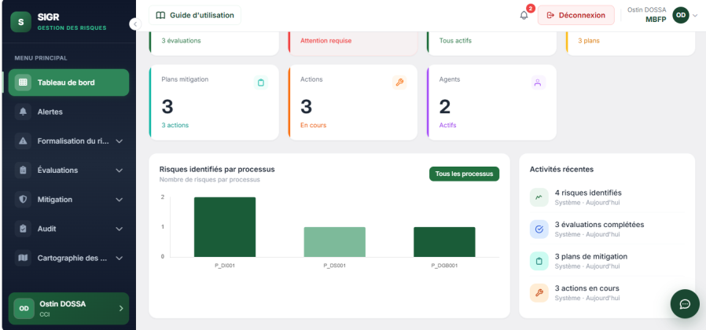
Alertes
Le module Alertes centralise toutes les notifications destinées à la CCI : nouveaux risques à évaluer, actions arrivant à échéance, indicateurs en retard, cartographies renvoyées, plans d'audit à mettre à jour, etc. Il est accessible depuis le menu principal (icône cloche « Alertes »).
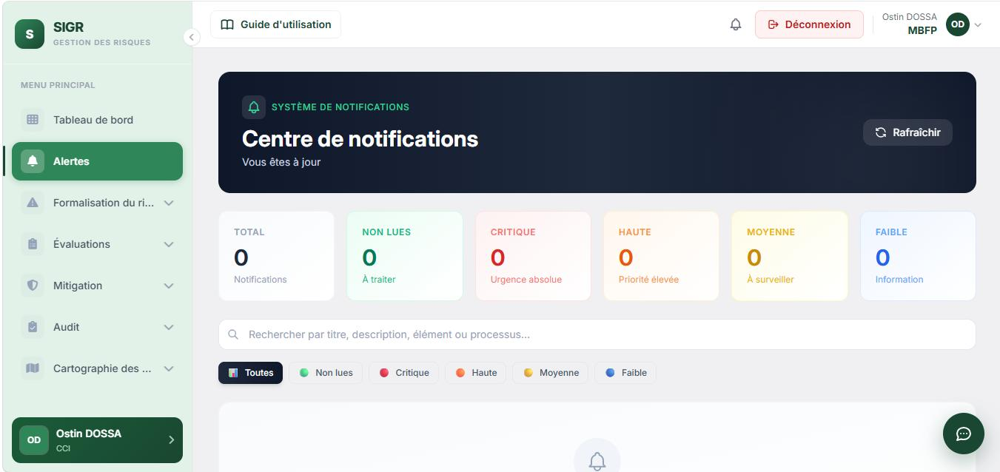
En haut de l'écran, un bandeau récapitule l'état du système de notifications (par exemple « Vous êtes à jour ») et propose un bouton « Rafraîchir » pour forcer la mise à jour de la liste.
Les compteurs affichés permettent d'évaluer rapidement la charge de travail :
| Compteur | Signification |
|---|---|
| Total | Nombre total de notifications reçues. |
| Non lues | Notifications qui n'ont pas encore été consultées — à traiter en priorité. |
| Critique | Notifications liées à une urgence absolue. |
| Haute | Notifications de priorité élevée. |
| Moyenne | Notifications à surveiller. |
| Faible | Notifications à titre d'information. |
Le champ de recherche permet de filtrer par titre, description, élément ou processus. Des onglets rapides (Toutes, Non lues, Critique, Haute, Moyenne, Faible) affinent également la liste selon le niveau de priorité.
Processus / Mission
Ce module regroupe les processus de l'entité et les risques qui leur sont associés. La CCI y accède exclusivement en consultation : les processus et les risques sont formalisés par le responsable risque de chaque service.
Cet écran recense les processus métier, support et de pilotage de l'entité, afin que la CCI connaisse le périmètre sur lequel s'appuient les risques, les évaluations et les plans d'audit.
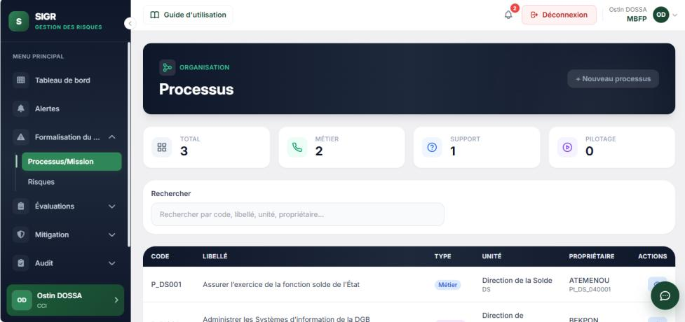
Le champ de recherche permet néanmoins à la CCI de retrouver rapidement un processus par code, libellé, unité ou propriétaire, et les compteurs Total / Métier / Support / Pilotage donnent une vue d'ensemble du périmètre couvert.
↑ Retour au sommaireRisques
Cet écran recense les risques identifiés sur les processus de l'entité, avec leur type, leur statut et le processus auquel ils se rattachent.
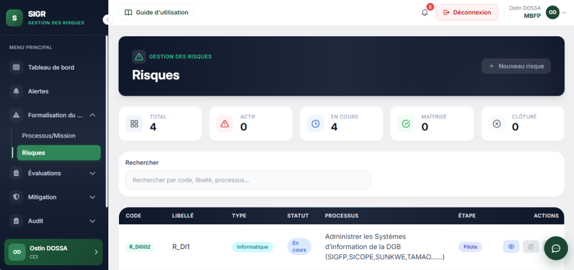
| Statut du risque | Signification |
|---|---|
| Actif | Le risque est identifié mais n'a pas encore fait l'objet d'un traitement particulier. |
| En cours | Un plan de mitigation ou des actions de traitement sont en cours de mise en œuvre. |
| Maîtrisé | Les actions de traitement ont permis de ramener le risque à un niveau acceptable. |
| Clôturé | Le risque n'est plus pertinent pour l'entité (processus arrêté, cause disparue, etc.). |
Évaluer un risque
Ce module permet de consulter la cotation de chaque risque formalisé, afin d'apprécier sa criticité et l'ordre de priorité de traitement retenu.
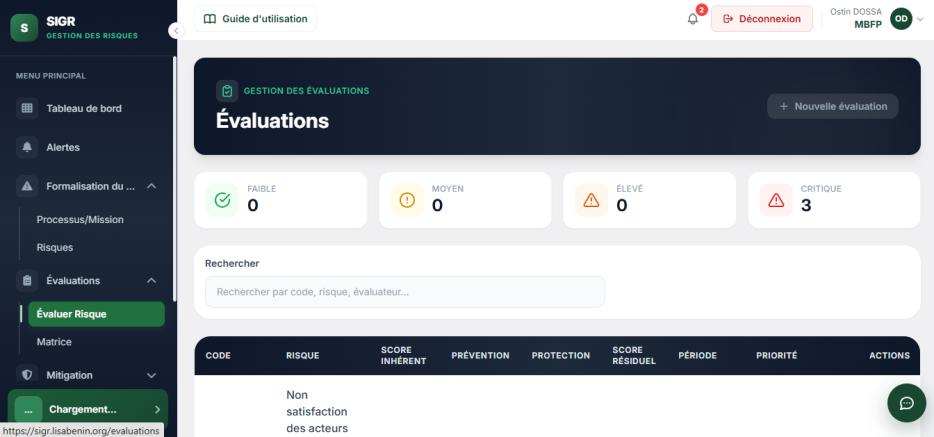
Le tableau récapitule, pour chaque évaluation :
- Le code de l'évaluation et le risque concerné ;
- Le score inhérent (impact × probabilité avant traitement), avec son niveau (Faible, Moyen, Élevé, Critique) ;
- Les niveaux de prévention et de protection retenus ;
- Le score résiduel (après prise en compte des mesures existantes), avec son niveau ;
- La période d'évaluation et la priorité de traitement (par exemple 3/5).
Par exemple, un risque « Inaccessibilité aux ressources informatiques » affichant un score inhérent de 25 (Critique) et un score résiduel de 15 (Critique) permet à la CCI d'identifier rapidement que ce risque reste critique malgré les mesures de prévention déjà en place, et d'orienter en conséquence ses travaux de contrôle.
Matrice des risques
La matrice offre une lecture visuelle croisant impact (1 à 5) et probabilité (1 à 5). Chaque case affiche un score de 1 à 25, codé par couleur.
| Niveau | Signification |
|---|---|
| Faible (vert) | Score de 1 à 7 — risque à surveiller, pas d'action prioritaire requise. |
| Moyen (jaune) | Score de 8 à 14 — risque à traiter dans un délai raisonnable. |
| Élevé (rouge) | Score de 15 à 25 — risque prioritaire nécessitant un plan de mitigation immédiat. |
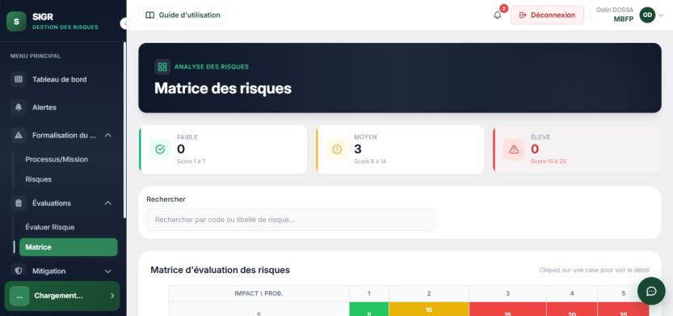
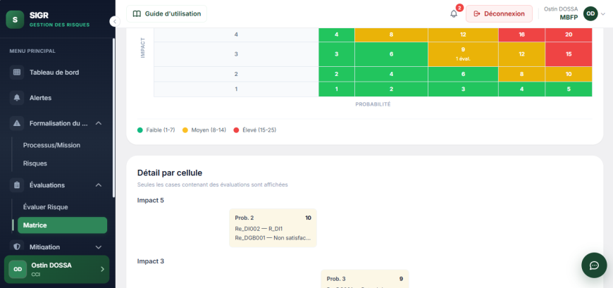
En cliquant sur une case de la matrice, la CCI accède au détail des évaluations correspondant à ce couple impact/probabilité, ce qui facilite l'identification rapide des risques les plus critiques du périmètre observé.
Plans de mitigation
Ce module regroupe le traitement opérationnel des risques évalués : plans de mitigation, actions concrètes et indicateurs de suivi. La CCI y accède en consultation, afin de vérifier que les risques évalués font bien l'objet d'un traitement adapté.
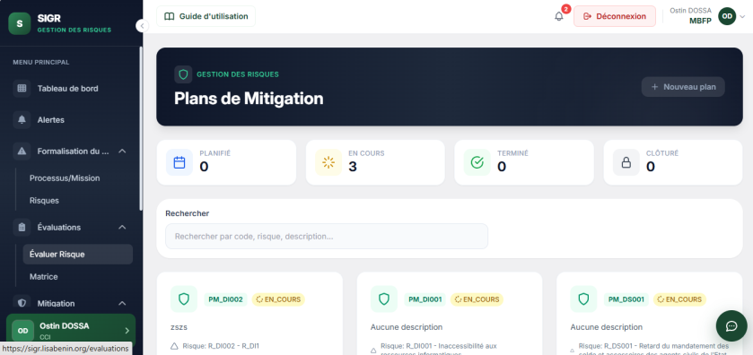
| Statut du plan | Signification |
|---|---|
| Planifié | Le plan est défini mais sa mise en œuvre n'a pas encore commencé. |
| En cours | Le plan est en cours de mise en œuvre. |
| Terminé | Le plan a été mené à son terme. |
| Annulé | Le plan a été abandonné. |
Actions
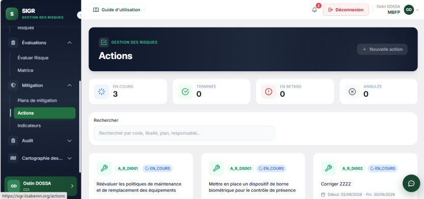
Le tableau de bord signale automatiquement les actions « En retard », ce qui permet à la CCI de relancer, via le Responsable des risques, les responsables concernés.
↑ Retour au sommaireIndicateurs de réalisation (KPI)
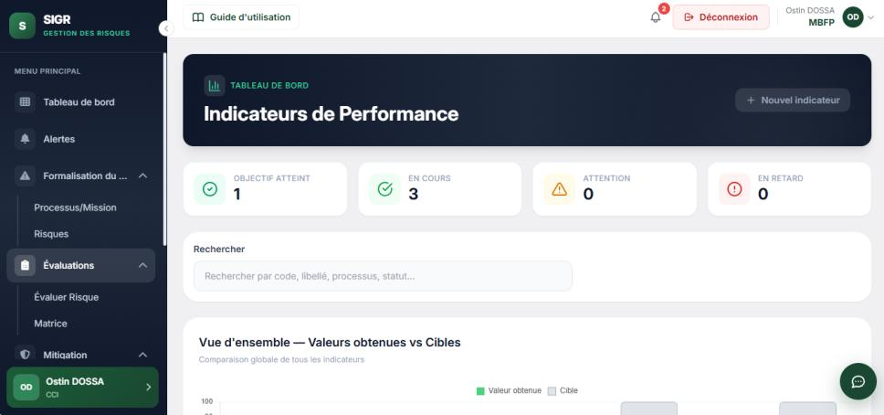
Au-delà de la liste, l'écran propose des vues graphiques (répartition par statut En cours / Attention / En retard, et taux d'atteinte par indicateur) qui aident la CCI à visualiser rapidement l'avancement global.
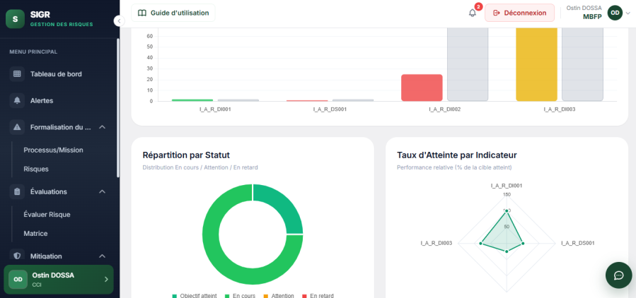
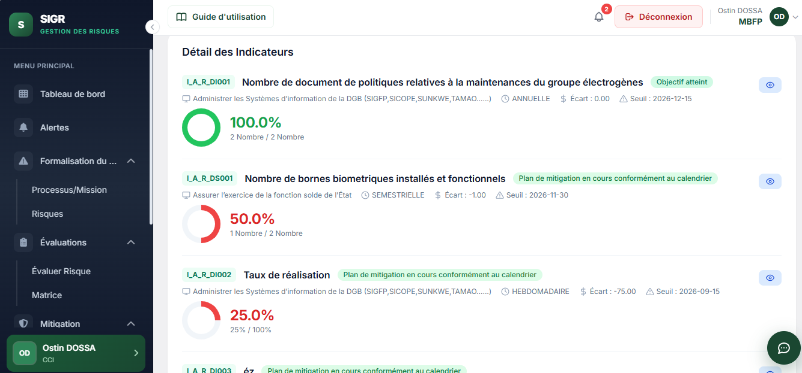
Par exemple, l'indicateur I_A_R_DI001 (« Nombre de document de politiques relatives aux maintenances du groupe électrogènes ») affiche un taux d'atteinte de 50 % (1 sur 2), un écart de -1,00 et un seuil au 15/12/2026, avec la mention « Plan de mitigation en cours conformément au calendrier ».
Plans d'audit
Ce module est spécifique à la Cellule de Contrôle Interne. Il permet de consulter les plans d'audit rattachés aux processus et aux risques déjà formalisés dans SIGR, afin de vérifier sur le terrain la fiabilité des dispositifs de maîtrise mis en place par les services.
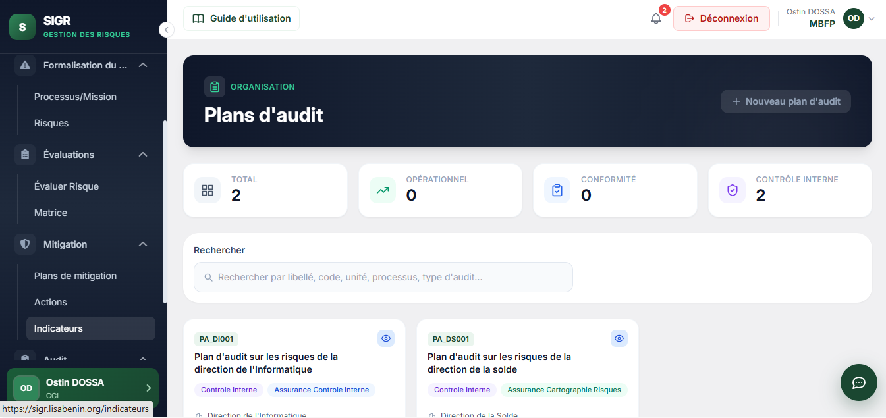
L'écran liste l'ensemble des plans d'audit de l'institution, avec des compteurs Total / Opérationnel / Conformité / Contrôle Interne et un champ de recherche par libellé, code, unité, processus ou type.
Chaque plan d'audit affiché présente notamment :
- Le code et le libellé du plan (par exemple « Plan d'audit sur les risques de la direction de l'Informatique ») ;
- Le type de mission concerné : Contrôle Interne et/ou Assurance Contrôle Interne ;
- L'unité ou la direction auditée ;
- Le processus rattaché (tel que formalisé dans le module Formalisation du risque) ;
- Le risque associé (tel que formalisé et évalué dans les modules précédents) ;
- Le type d'audit : Opérationnel et/ou Conformité.
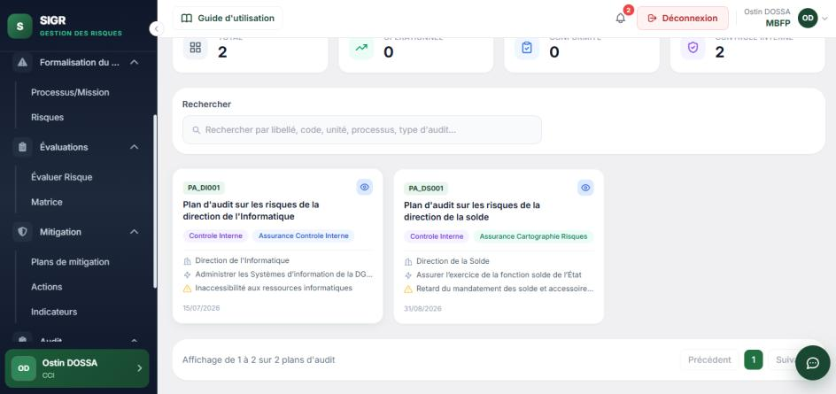
Projet de cartographie de risques
La cartographie consolide l'ensemble des risques évalués de l'entité, transmis par le responsable risque au Responsable des risques pour validation. La CCI y accède en consultation, afin de suivre l'état d'avancement de cette validation.
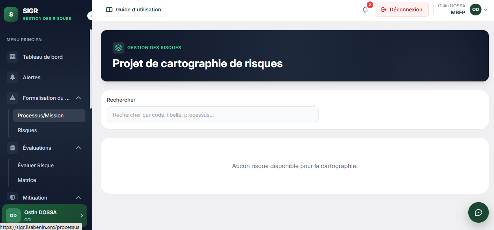
Tant qu'aucun risque évalué n'est disponible, l'écran affiche « Aucun risque disponible pour la cartographie ». La sélection et la transmission des risques vers cette cartographie relèvent du responsable risque ; la CCI consulte cet écran pour suivre le périmètre en cours de constitution.
↑ Retour au sommaireCartographie différée et rejetée
Si le Responsable des risques renvoie une cartographie pour compléments ou la rejette, elle apparaît dans cet écran avec le motif du renvoi.
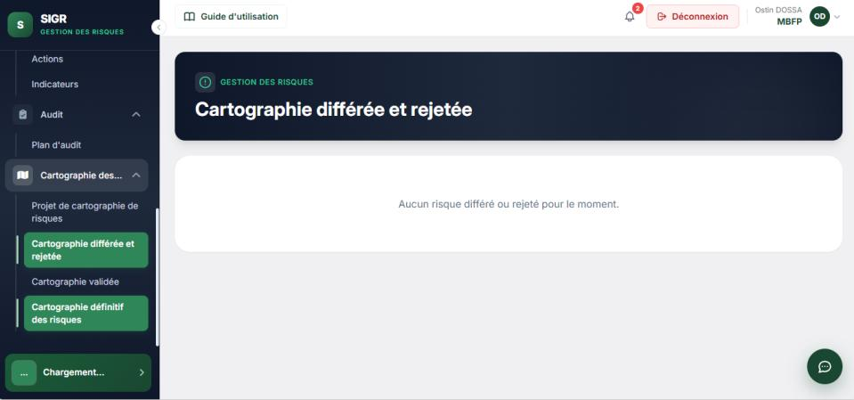
La CCI peut ainsi suivre les points nécessitant une correction par le responsable risque concerné, avant nouvelle transmission.
↑ Retour au sommaireCartographie validée
Cet écran liste les risques dont la transmission a été acceptée par le Responsable des risques : ils sont désormais validés et attendent l'étape de consolidation finale.
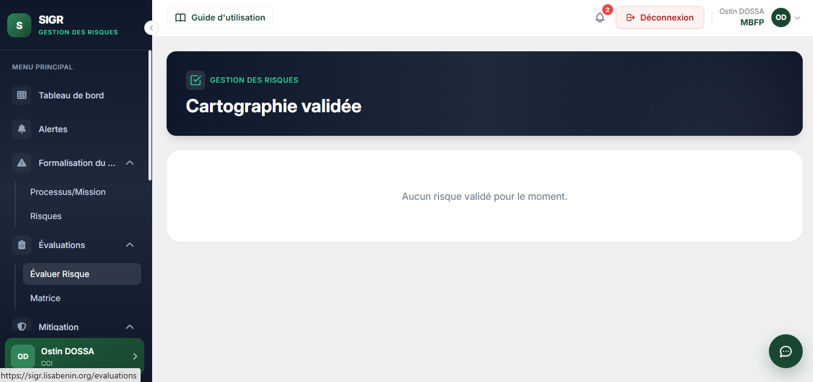
Tant qu'aucun risque n'a été validé, l'écran affiche « Aucun risque validé pour le moment ».
↑ Retour au sommaireCartographie définitive des risques
Cet écran, également accessible depuis le module Mitigation, consolide l'ensemble des risques transmis pour l'entité et affiche leur avis de traitement.
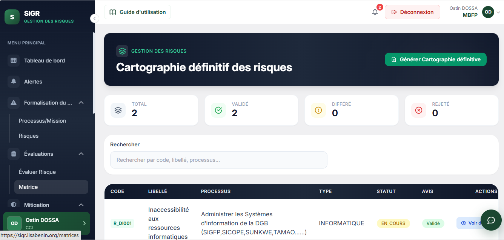
| Avis | Signification |
|---|---|
| Validé | Le risque a été accepté tel quel par le Responsable des risques. |
| Différé | Le risque a été renvoyé au responsable risque pour compléments avant nouvelle transmission. |
| Rejeté | Le risque a été écarté de la cartographie de l'entité. |
Le tableau récapitule, pour chaque risque transmis, le code, le libellé, le processus, le type, le statut et l'avis rendu. La consolidation officielle de la cartographie définitive (bouton « Générer Cartographie définitive ») est réalisée par le Responsable des risques ; la CCI consulte ici le résultat final.
Bonnes pratiques pour la CCI
- Consulter régulièrement le tableau de bord pour détecter rapidement toute anomalie (risques critiques, actions en retard, indicateurs en alerte).
- Partir de la matrice des risques pour identifier les processus et risques les plus critiques à examiner en priorité.
- Vérifier la cohérence entre le score résiduel affiché dans les évaluations et l'avancement réel des plans de mitigation et actions associés.
- S'appuyer sur les plans d'audit existants pour structurer ses travaux de contrôle, en s'assurant qu'ils couvrent bien les processus et risques les plus sensibles.
- Signaler au Responsable des risques toute incohérence constatée (risque sans évaluation, action en retard non traitée, indicateur non actualisé) plutôt que de tenter de la corriger soi-même dans l'outil.
- Suivre l'état des cartographies (différée, rejetée, validée, définitive) pour identifier les entités dont le dispositif de maîtrise des risques nécessite un accompagnement particulier.
Glossaire rapide
| Terme | Signification |
|---|---|
| Score inhérent | Niveau de risque brut, avant prise en compte des mesures de maîtrise (probabilité × impact). |
| Score résiduel | Niveau de risque restant après application des mesures de prévention et de protection. |
| Priorité | Ordre de traitement recommandé, déduit du score résiduel. |
| KPI | Indicateur clé de performance utilisé pour suivre la maîtrise d'un risque dans la durée. |
| Cartographie | Vue consolidée de l'ensemble des risques évalués d'une entité, transmise pour validation. |
| Plan d'audit | Mission de contrôle rattachée à un processus et à un risque, visant à vérifier la fiabilité des dispositifs de maîtrise en place. |
| Assurance Contrôle Interne | Type de mission d'audit consistant à évaluer objectivement l'efficacité du dispositif de contrôle interne d'un processus. |